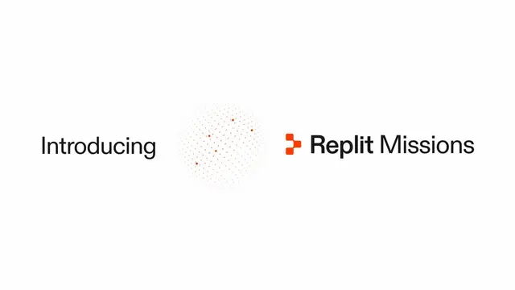

#その他
Replit、エージェント群が目標達成まで自律的に働く「Replit Missions」を発表

Replitは2026年11月17日、複雑な業務を「エージェント群（スウォーム）」に任せる新機能「Replit Missions」を発表しました。ユーザーが目指す成果を決めると、Replitが複数のAIエージェントをまとめて動かし、計画、構築、テスト、改善を繰り返します。指定した予算と権限の範囲内で、成果が出るまで作業を続けます。
記事で取り上げている点
- 仕組み：目標・予算・権限を「契約」として定義
- 事例：2日間で社内向けアプリ監視基盤「DataCat」を構築
- 影響と注意点
- 今後の展望
一次情報（出典） replit.com